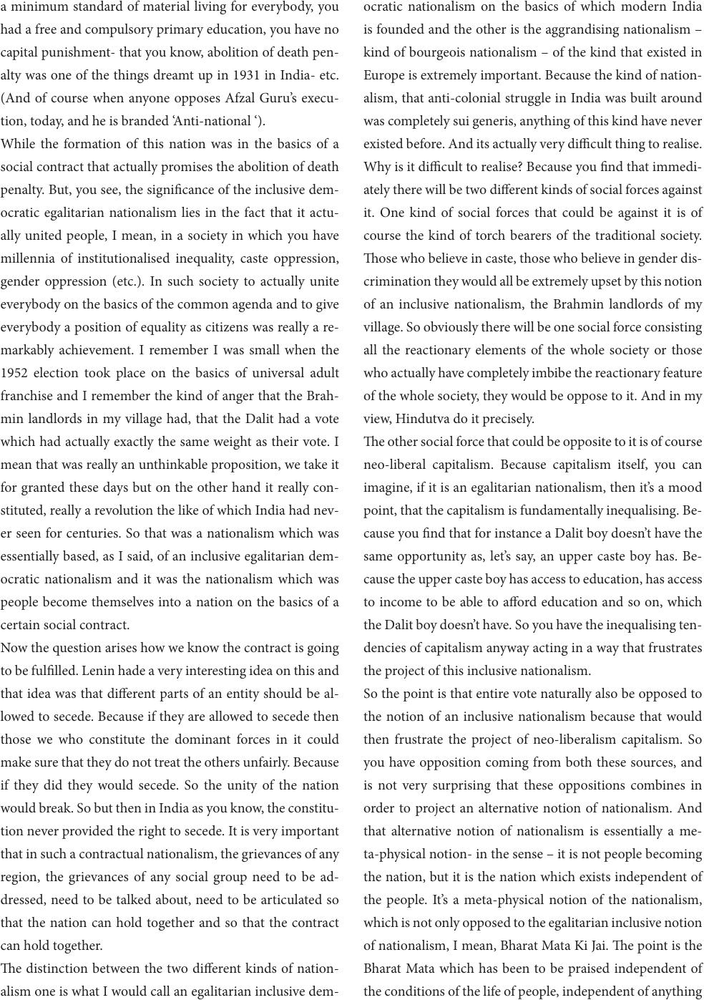

a minimum standard of material living for everybody, you
had a free and compulsory primary education, you have no
capital punishment- that you know, abolition of death pen-
alty was one of the things dreamt up in 1931 in India- etc.
(And of course when anyone opposes Afzal Guru’s execu-
tion, today, and he is branded ‘Anti-national ‘).
While the formation of this nation was in the basics of a
social contract that actually promises the abolition of death
penalty. But, you see, the signicance of the inclusive dem-
ocratic egalitarian nationalism lies in the fact that it actu-
ally united people, I mean, in a society in which you have
millennia of institutionalised inequality, caste oppression,
gender oppression (etc.). In such society to actually unite
everybody on the basics of the common agenda and to give
everybody a position of equality as citizens was really a re-
markably achievement. I remember I was small when the
1952 election took place on the basics of universal adult
franchise and I remember the kind of anger that the Brah-
min landlords in my village had, that the Dalit had a vote
which had actually exactly the same weight as their vote. I
mean that was really an unthinkable proposition, we take it
for granted these days but on the other hand it really con-
stituted, really a revolution the like of which India had nev-
er seen for centuries. So that was a nationalism which was
essentially based, as I said, of an inclusive egalitarian dem-
ocratic nationalism and it was the nationalism which was
people become themselves into a nation on the basics of a
certain social contract.
Now the question arises how we know the contract is going
to be fullled. Lenin hade a very interesting idea on this and
that idea was that dierent parts of an entity should be al-
lowed to secede. Because if they are allowed to secede then
those we who constitute the dominant forces in it could
make sure that they do not treat the others unfairly. Because
if they did they would secede. So the unity of the nation
would break. So but then in India as you know, the constitu-
tion never provided the right to secede. It is very important
that in such a contractual nationalism, the grievances of any
region, the grievances of any social group need to be ad-
dressed, need to be talked about, need to be articulated so
that the nation can hold together and so that the contract
can hold together.
e distinction between the two dierent kinds of nation-
alism one is what I would call an egalitarian inclusive dem-
ocratic nationalism on the basics of which modern India
is founded and the other is the aggrandising nationalism –
kind of bourgeois nationalism – of the kind that existed in
Europe is extremely important. Because the kind of nation-
alism, that anti-colonial struggle in India was built around
was completely sui generis, anything of this kind have never
existed before. And its actually very dicult thing to realise.
Why is it dicult to realise? Because you nd that immedi-
ately there will be two dierent kinds of social forces against
it. One kind of social forces that could be against it is of
course the kind of torch bearers of the traditional society.
ose who believe in caste, those who believe in gender dis-
crimination they would all be extremely upset by this notion
of an inclusive nationalism, the Brahmin landlords of my
village. So obviously there will be one social force consisting
all the reactionary elements of the whole society or those
who actually have completely imbibe the reactionary feature
of the whole society, they would be oppose to it. And in my
view, Hindutva do it precisely.
e other social force that could be opposite to it is of course
neo-liberal capitalism. Because capitalism itself, you can
imagine, if it is an egalitarian nationalism, then it’s a mood
point, that the capitalism is fundamentally inequalising. Be-
cause you nd that for instance a Dalit boy doesn’t have the
same opportunity as, let’s say, an upper caste boy has. Be-
cause the upper caste boy has access to education, has access
to income to be able to aord education and so on, which
the Dalit boy doesn’t have. So you have the inequalising ten-
dencies of capitalism anyway acting in a way that frustrates
the project of this inclusive nationalism.
So the point is that entire vote naturally also be opposed to
the notion of an inclusive nationalism because that would
then frustrate the project of neo-liberalism capitalism. So
you have opposition coming from both these sources, and
is not very surprising that these oppositions combines in
order to project an alternative notion of nationalism. And
that alternative notion of nationalism is essentially a me-
ta-physical notion- in the sense – it is not people becoming
the nation, but it is the nation which exists independent of
the people. It’s a meta-physical notion of the nationalism,
which is not only opposed to the egalitarian inclusive notion
of nationalism, I mean, Bharat Mata Ki Jai. e point is the
Bharat Mata which has been to be praised independent of
the conditions of the life of people, independent of anything